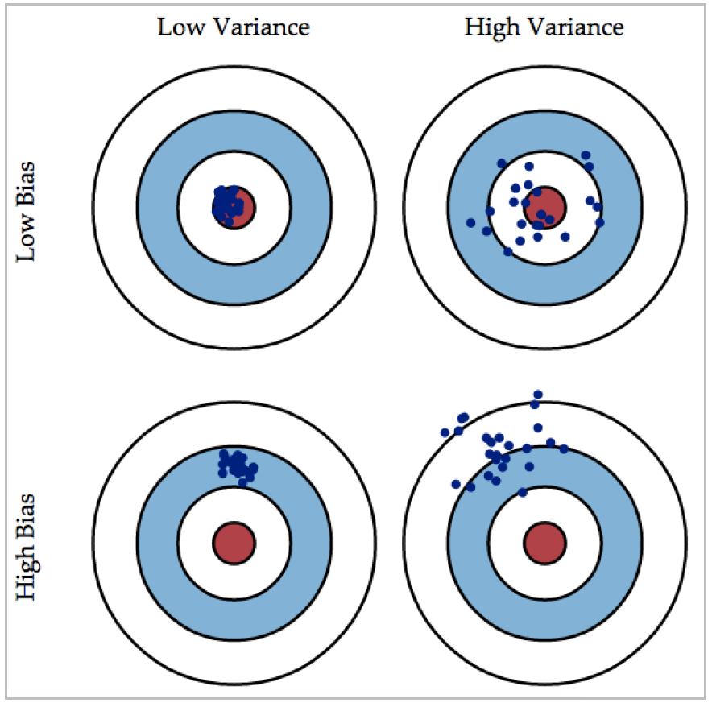
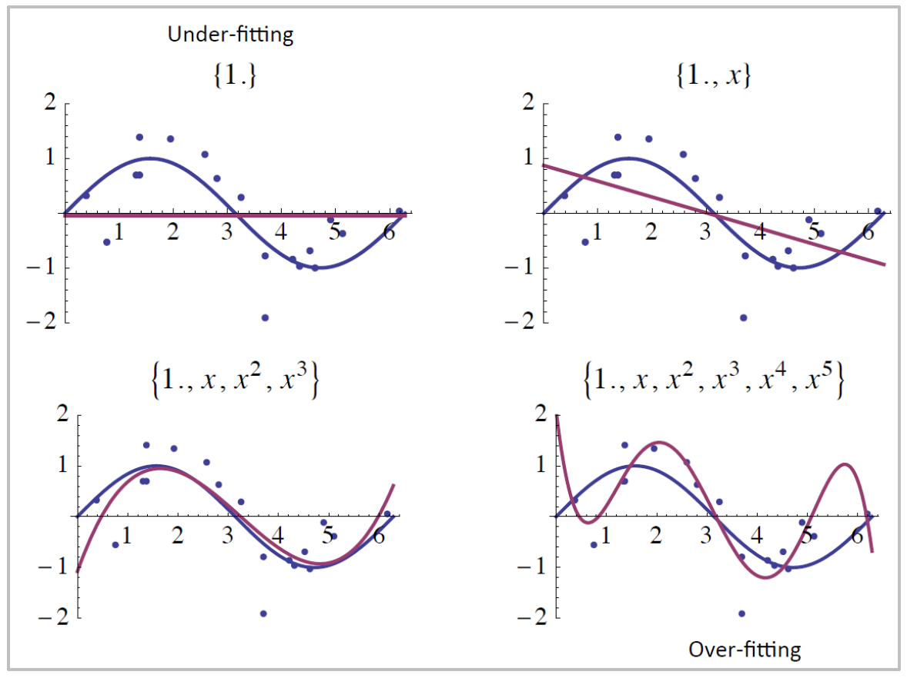
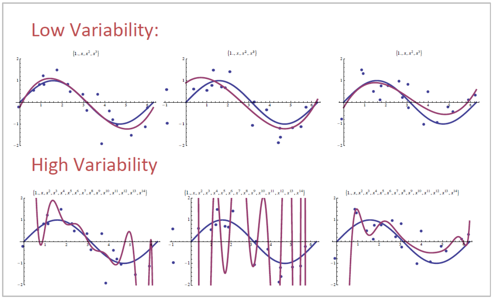

Fundamentals of
Data Analytics and
Predictions
Regression II
Xi (Rossi) LUO
Department of Biostatistics and Data Science
School of Public Health
The University of Texas Health Science Center at
Houston
Outline
- Overall test vs. individual tests
- Variable selection
Linear Regression Inference
- Assessment of significance of any predictor vs. individual predictors
- Assessment of significance of any predictor corresponds to the null
hypothesis:
- Assessment of significance of an individual predictor corresponds to the null
hypothesis:
Simulation
- Simulated $p=100$ variables from $N(0,1)$ distribution
- $Y\thicksim N(0,1)$
- Simulated $n=1000$ patients
- Repeated the simulation 1000 times
- Want to see:
- Of the 1000 simulations, was the overall F test p value significant?
- Of the 1000 simulations, how often the p value of any single covariate is
significant
Simulation Results
- Of the 1000 simulations, 5.1% had an overall F statistic p value $ < 0.05$. Is this
surprising?
Model Selection: Bias Variance Trade Off
Model Selection Questions
- If many predictors/covariates available, do we need to include all of
them in the model?
- If not all, which one should or should not be included? How to
determine?
- If too many predictors/covariates included, what is the consequence?
- If too few predictors/covariates included, what is the consequence?
- How to build a model that is parsimonious and biologically relevant?
Importance: Model Selection
- Too many possible predictors in Big Data
- Bias variance tradeoff:
- Include too many predictors: small bias but big variance
- Include too few predictors: small variance but large bias
- Best trade off?
- Two competing goals:
- The model should be complex enough to fit the data well.
- The model should be relatively simple to interpret,
smoothing rather than overfitting the data.
Bias Variance Trade off
- Bias: the difference between the
expected (average) prediction
value and the true value
- Variance: the variability of the
prediction if repeat the prediction
many times

Bias Variance Trade off -1
- For a regression model $y=f(x)+\epsilon, \epsilon\thicksim N(0,\sigma^2)$
- Prediction of $y$: $\hat f(x)$
- Expected mean square error (MSE) of predicted value:
$E[y-\hat{f}(x)^2] \\ =\lbrace E[\hat{f}(x)]-f(x) \rbrace^2+E\lbrace
(\hat{f}(x)-E[f(x)])^2\rbrace+\sigma^2
\\ =Bias[\hat{f}(x)]^2+Var[\hat{f}(x)]+\sigma^2$
where
$Bias[\hat{f}(x)]=E[\hat{f}(x)]-f(x) \\ Var[\hat{f}(x)]=E\lbrace
(\hat{f}(x)-E[\hat{f}(x)])^2\rbrace$
Bias Variance Trade off -2

Bias Variance Trade off -3

Model Selection
- Bias variance trade off:
- Include too many predictors: small bias, but big variance
- Overfit the data
- Numerically unstable estimates
- Include too few predictors: small variance, but large bias
- May omit important predictors or confounders
- What is the best trade off?
Variable Selection
- Traditional variable selection methods
- Best subset
- Forward
- Backward
- Stepwise
- Purposeful selection (Hosmer, Lemeshow, Sturdivant)
Best Subset Selection
- Total $p$ predictors: $X_1, X_2, ..., X_p$
- For $k=1,…,p$, fit all possible models $p \choose k$ for each $k$
- Pick the best model based on a model evaluation criterion
- Adjusted $R^2$
- AIC, BIC
- Mallows' $C_p$
- Cross-validated prediction error
- Computational problem: Total $2^p$ models
Forward Selection
- 1. Start from 0 predictors in the model
- 2. Find the most significant (important) predictor using F-test or other criteria, add the
predictor in the model
- Importance measure: F-test $p < 0.05-0.20$
- AIC (to be introduced later, smaller is better)
- 3. Repeat until no further predictor can be added
Backward Selection
- 1. Start from all predictors in the model
- 2. Find the least significant (important) predictor using F-test or other criteria, drop the
predictor from the model
- Importance measure: F-test $p > 0.05-0.20$
- AIC (smaller is better)
- 3. Repeat until no further predictor can be dropped
- Problem: Need to fit a large model with all predictors
Stepwise Selection
- 1. Start from 0 predictor in the model
- 2. Do one step of forward selection
- F-test, $p < 0.05$
- or AIC (smaller is better)
- 3. Do one step of backward elimination
- F-test, $p > 0.20$
- or AIC (smaller is better)
- 4. Repeat Steps 2-3 until no further predictor can be added or dropped
Forward/Backward Selection
- Better than the exhaustive “best subset selection” in computational efficiency
- Price to pay: may not produce the best model
$R^2$
- Many variable selection criteria are built on RSS
- Suppose that $(x_i, y_i), i=1, ..., n$ $iid \thicksim y=x^T\beta+\epsilon $
- RSS is defined as: $RSS=\sum_{i=1}^{n}(y_i-\hat y_i)^2$
- $RSS_p$: RSS with p variable $1 ≤ p ≤ s$ and a constant in the model
- $RSS_0$: RSS when a constant is being fitted
- R-squared is defined as $R_p^2=1-\frac{RSS_p}{RSS_0}$
- $R_p^2$ measures how well the fitting of the p variables is
Adjusted $R^2$
- $R_p^2$ always increases when a variable is added to a model
- It cannot serve as a criterion for model selection
- Adjust the $R_p^2$ for df to get the adjusted $R^2$-statistic
$A_p=R_a^2=1-\frac{RSS_p/(n-p)}{RSS_0/(n-1)}=1-(1-R_p^2)\frac{n-1}{n-p}$
- Also termed as Fisher's A-statistic
- $A_p$ does not necessarily increase when a variable is added to a model
- Maximizing $A_p$ w.r.t. $p \equiv minimizing$
$s_p^2=\frac{RSS_p}{n-p}$
PRESS and Cross Validation
- Prediction sum of squares (PRESS, Allen 1974)
- Let $y_{(i)}$ be the predicted value for $y_i$ based using $n-1$ observations other than the
$i$th one.
The PRESS statistic for the subset of p-variables is defined as
$PRESS_p=\sum_{i=1}^{n}(y_i-\hat y_{(i)})^2$
- Cross Validation (CV):
- In practice, the cross-validation approach may be used to estimate the PRESS statistic
- Leave one observation or a small part of observation data when performing model fitting
- Predicted these data using the rest of the data
- Calculate the prediction sum of squares: PRESS
- Repeat many times
Generalized Validation Score GCV
- It can be shown that under certain mild conditions, the PRESS statistic can be asymptotically
approximated by the below equation if $n$ is much larger than $p$
$PRESS_p \approx \frac{n^2}{(n-p)^2}RSS_p$
- The right-hand side is closely related with the well-known generalized validation
score (GCV) for a linear regression model (Craven and Wahba, 1979)
$GCV=\frac{1}{n}\sum_{i}(\frac{y_i-\hat y_i}{1-tr(\textbf{H}/n)})^2$
- GCV: computationally convenient and popularly used in nonparametric regression for smoothing
parameter selection
$C_p$
- The $C_p$ statistic (Mallows, 1973) is defined as
$C_p=\frac{RSS_p}{\sigma^2}-(n-2p)$
- In practice, $\sigma^2$ is replaced with the unbiased estimate
$\hat \sigma^2=\frac{RSS_d}{(n-d)}$, the residual mean squares under the full model
- $C_p$is closely related to $R_2$ and adjusted $R_2$
- An adequate model: $E(C_p)=p$
AIC
- Akaike's Information Criterion (AIC, Akaike, 1973, 1974) is defined as
$AIC_p=RSS_p+2p\sigma^2$
- Many classical variable selection criteria is of the form where c is a regularization parameter
$RSS_p+cp\sigma^2$
- In practice, $\sigma^2$ is replaced with the unbiased estimate
$\hat \sigma^2=\frac{RSS_d}{(n-d)}$
- The residual mean squares under the full model
Model Selection Criteria: BIC and RIC
- Bayesian information criterion (BIC, Schwarz, 1978)
$BIC_p=RSS_p+\log(n)p\sigma^2$
- $\phi$-criterion (Shibata, 1984):
$\phi_p=RSS_p+\log(\log(n))p\sigma^2$
- Risk information criterion (RIC, Foster and George, 1994)
$RIC_p=RSS_p+2\log(d)p\sigma^2$
Model Selection Criteria
- Notice that BIC replaces the $2d\hat \sigma^2$ used by $C_p$ with a $\log(n)d\hat \sigma^2$,
where $n$ is the number of observations
- Since $\log n> 2$ for any $n> 7$, the BIC statistic generally places a heavier penalty on models
with many variables, and hence results in the selection of smaller models than $C_p$
- CV: Compared to AIC, BIC, $C_p$ and adjusted $R^2$
- Advantage: Direct estimate of prediction error
- Disadvantage: Computationally expensive
- GCV can be used to overcome the disadvantage
Problems with Traditional Variable Selection
- Computationally expensive
- Difficult to deal with high-dimensional covariates and collinearity
- Clinically or biologically relevant variables may not be selected if the selection is only based
on p-values
- Motivate the new approaches
Purposeful Variable Selection Method—1
-
Book: Hosmer, Lemeshow, and Sturdivant, Applied Logistic Regression, 3rd
Edition: Chapter 4.2
- Hosmer and Lemeshow: Two earlier books (1999, 2000)
- Not only select statistically significant covariates, but also possible confounders
- Trade-off: Statistical significance vs. scientific relevance
Purposeful Variable Selection Method—2
- Perform univariate analysis: Initial Screening
- Fit the multivariable model containing all possibly-important covariates identified from
Step
1, then drop “insignificant” covariates based on the fitting $\rightarrow$ a
Reduced/Smaller Model
- Compare the estimated coefficients from the larger model and the smaller model to
identify
“high-impact” covariates or confounding variables, and add them back to the model. Repeat
Steps
2 and 3 until satisfactory
- Add each variable not selected in Step 1 to the model from Step 3, and include the
significant variables back to the model $\rightarrow$ Preliminary Main Effects
Model
- Check the linear assumption and other assumptions of regression models for the entered
continuous variables in Step 4, and revised the model if necessary $\rightarrow$
Main
Effects Model
- Check for interactions in the model and include important interaction terms in the model
$\rightarrow$ Preliminary Final Model
- Check model fitting: if good $\rightarrow$ Final Model
Purposeful Variable Selection —Step 1
- Use univariate analysis to identify important covariates: Initial screening
- Run a separate regression analysis for each variable (univariate analysis)
- Remarks
- Can use F-test, Wald or LR test for continuous and dichotomous variables
- Use LR test for categorical variables (testing all dummy variables at once)
- Significance level: $p=0.20-0.25$
Purposeful Variable Selection —Step 2
- Fit the multivariable model containing all possibly-important covariates identified from Step 1,
then drop “insignificant” covariates based on the fitting $\rightarrow$ a
Reduced/Smaller Model
- Fit the multivariable model containing all possibly-important covariates identified from
Step 1
- Perform backward variable selection:
- Can we eliminate any covariate?
F-test or Wald test: $p\gt0.05$ or $0.10$, remove
- Compare the smaller model vs. the large model using one model comparison criterion
- Confirm and result in a reduced/smaller model
Purposeful Variable Selection —Step 3
- Compare the estimated coefficients from the larger model and the smaller model to identify
“high-impact” covariates or confounding variables, and add them back to the model. Repeat Steps
2 and 3
- Based on the model from Step 2, add each dropped variable back to the model:
- Is this change the magnitude of any other coefficient estimates by 20%? If yes, add this
dropped variable back to the model
- You may try to add back one or a few dropped variables back to the model at a time
- Repeat Steps 2 and 3 until satisfactory
- All the included variables are important
- All the dropped variables are clinically and/or statistically unimportant
- Steps 2-3: Similar to the “stepwise variable selection” approach
Purposeful Variable Selection —Step 4
- Add each variable not selected in Step 1 to the model from Step 3, and include the significant
variables back to the model $\rightarrow$ Preliminary Main Effects Model
- Forward variable selection for those variables dropped in Step 1: Some of these dropped
variables may have a significant effect for the model from Step 3
- Use F-test, Wald test or LR test: $p < 0.05-0.20$
- Result in the “Preliminary Main Effects Model”
Purposeful Variable Selection —Step 5
- Check the linear assumption and other assumptions of regression models for the entered
continuous variables in Step 4, and revised the model if necessary $\rightarrow$ Main
Effects Model
- Check linearity:
- Smoothed scatterplot (to find a transformation of the variable)
- Alternative models for non-linear associations
- What do you do if your continuous variable does not appear linear?
- Appropriate nonlinear functions: e.g., fractional polynomials
- Splines
- Other nonparametric regression models (generalized additive models)
Purposeful Variable Selection —Step 6
- Check for interactions in the model and include important interaction terms in the model
$\rightarrow$ Preliminary Final Model
- Do we need to include the interaction term of two factors? $x_ix_j$
- A list of all interactions if the main effects are included in the model in Step 5
- A list of all clinically plausible interactions
- Add the interaction terms one by one: Use F-test, Wald-test or LR test to determine the
significance, $p=0.05$ or $0.10$
- Repeat similar strategies as Steps 2-3
- Result in the “Preliminary Final Model”
Purposeful Variable Selection —Step 7
- Check model fitting: if good $\rightarrow$ Final Model
- Use all goodness-of-fit approaches to check the final fit of the model in Step 6.
- Residual plots
- Visualization tools
- Goodness-of-fit tests
- Everything is good $\rightarrow$ Final Model
- Otherwise, revise the model and repeat above steps
Summary
- There are many variable selection methods. Each has advantages and disadvantages over other
methods. The choice should be related to your goals in finding a prediction model and how
important the clinical relevance is for your model.